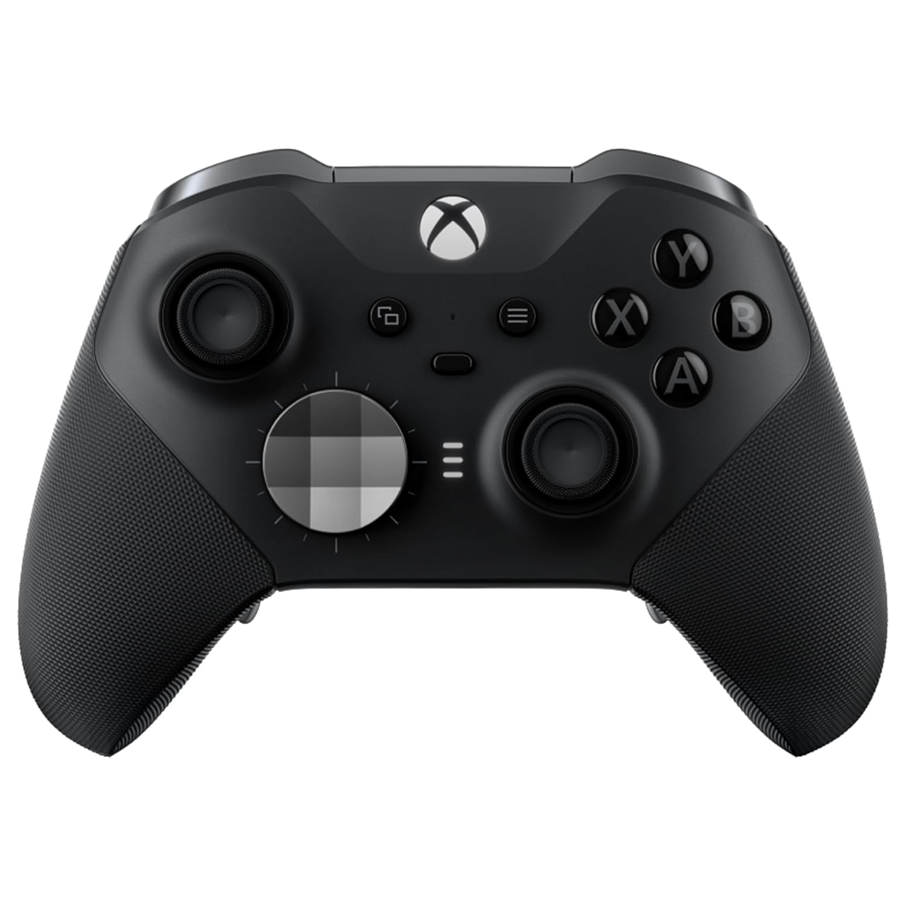
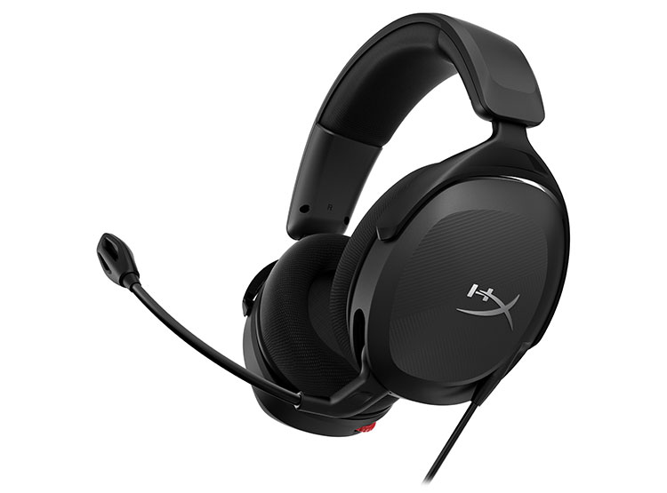
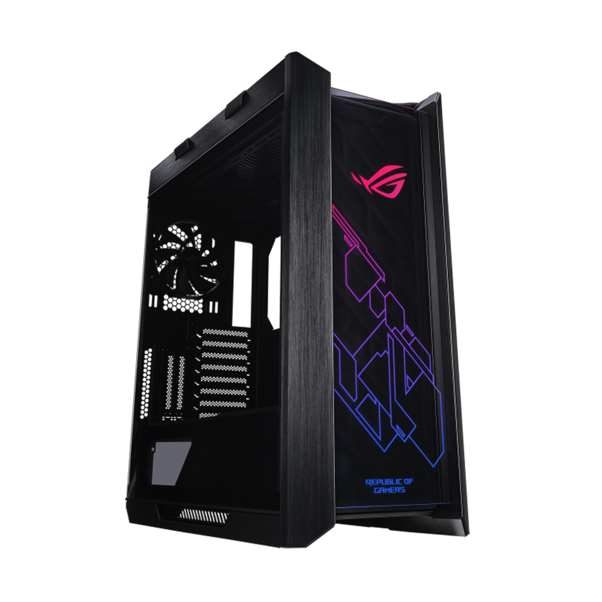
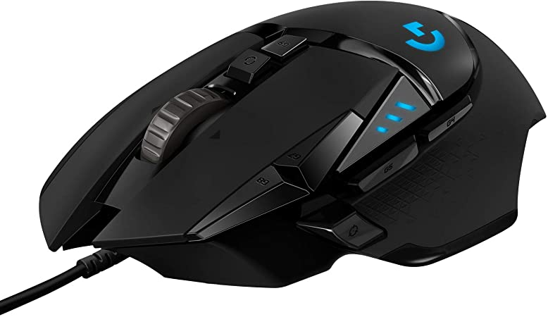
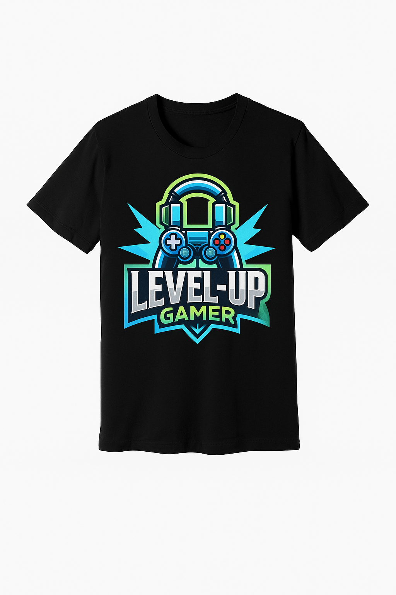

Catálogo de Productos para Canje

Catan
Juego de mesa clásico de estrategia.
300 Puntos Level-Up

Carcassonne
10% menos puntos
Juego de colocación de fichas.
198 Puntos Level-Up

Controlador Inalámbrico Xbox Series X
Control inalámbrico para Xbox y PC.
600 Puntos Level-Up

Auriculares Gamer HyperX Cloud II 20% menos puntos
Sonido envolvente y micrófono desmontable.
640 Puntos Level-Up

PlayStation 5
Consola de última generación.
5500 Puntos Level-Up

PC Gamer ASUS ROG Strix
Equipo de alto rendimiento para gamers.
12000 Puntos Level-Up

Silla Gamer Secretlab Titan 15% menos puntos
Soporte ergonómico y personalización.
298 Puntos Level-Up

Mouse Gamer Logitech G502 HERO
Sensor de alta precisión y botones personalizables.
120 Puntos Level-Up

Mousepad Razer Goliathus Extended Chroma
Área amplia e iluminación RGB.
90 Puntos Level-Up

Polera Gamer Personalizada 'Level-Up'
Camiseta personalizada para gamers.
60 Puntos Level-Up